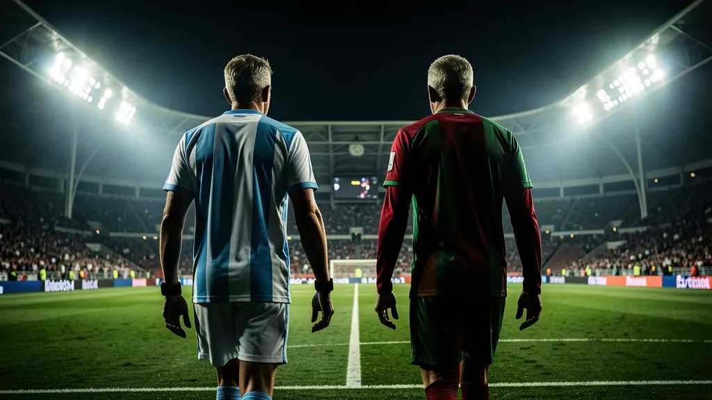
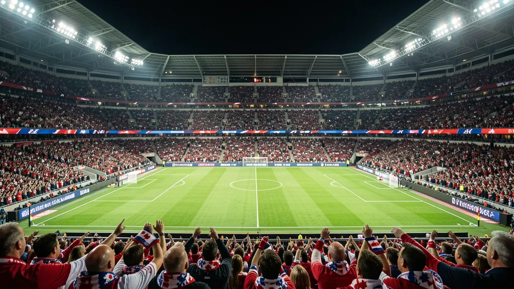
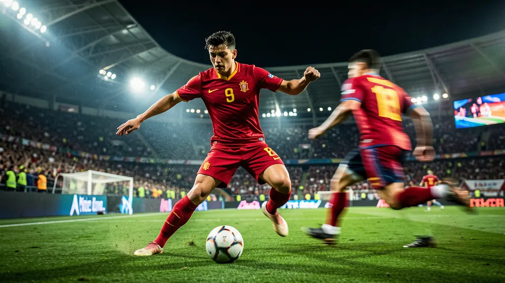
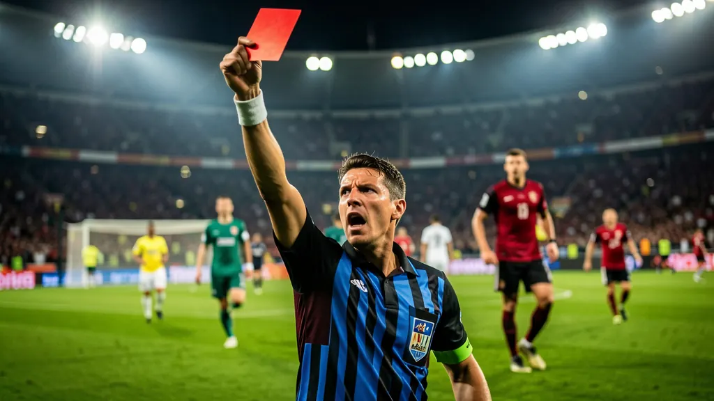
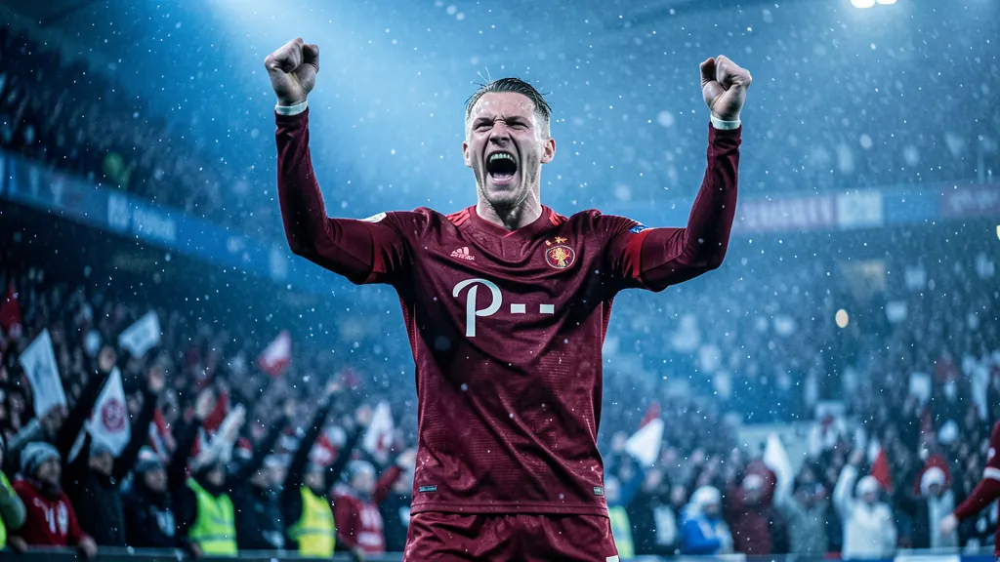
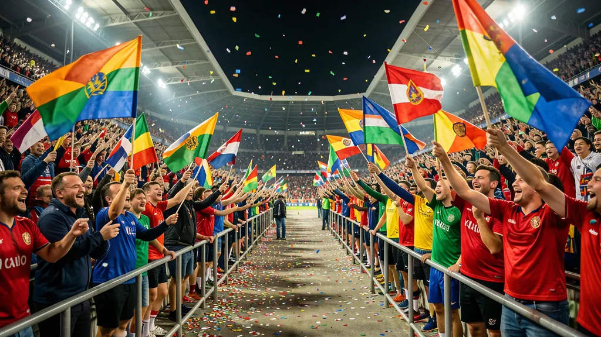

The biggest World Cup ever is underway.
48 teams. 104 matches. Three host nations. Mexico opened with a win at the Azteca, South Korea stunned Czechia, Canada rescued a draw in Toronto — and tonight the USA steps onto home soil.
Tonight's Matches
Fri Jun 12Results So Far
Matchday 1Storylines To Watch

🐐 The last dances
Lionel Messi (Argentina) and Cristiano Ronaldo (Portugal) are both in their sixth — and almost certainly final — World Cup. If both win their groups, the bracket points toward a fairytale quarterfinal collision.

🏠 Three hosts, three dreams
Mexico already delivered at the Azteca. The USA opens tonight at SoFi under Mauricio Pochettino, while Canada kicked off at BMO Field. No host nation has lifted the trophy since France in 1998.

⚡ Spain's golden floor
The Euro 2024 champions enter as betting favorites. Lamine Yamal, still a teenager, may be the most electric player on the planet — and Pedri runs the most fluent midfield in the field.

🟥 A record-breaking opener
Mexico's 2–0 win over South Africa featured three red cards — the most ever in a single World Cup match. The expanded tournament wasted no time making history.

🇳🇴 Haaland, finally
Norway is at its first World Cup since 1998, and Erling Haaland arrives as maybe the best pure striker alive. At 30–1, the Norwegians are the bookmakers' favorite dark horse.

🆕 First-timers' club
Curaçao (the smallest nation ever at a World Cup), Cape Verde, Jordan, and Uzbekistan all debut. Haiti and DR Congo are back for the first time since 1974.
Group Standings
Live · Jun 12Top two in each group qualify for the Round of 32, joined by the eight best third-place teams. Click any team for the full profile.
The 48
Every teamTitle Odds Board
As of Jun 12Spain and France have traded the top spot for months and enter as co-favorites. The defending champions, Argentina, sit sixth — bookmakers are wary of a repeat, history's hardest trick. Bars show implied win probability.
Dark Horses
🇳🇴 Norway · 30–1
Haaland and Ødegaard headline the best team Norway has ever sent anywhere. A brutal Group I with France awaits, but nobody wants them in a knockout round.
🇨🇴 Colombia · 40–1
Luis Díaz in his prime, James Rodríguez conducting one last symphony. A winnable Group K with Portugal could set up a deep run.
🇺🇸 USA · home heat
The American betting public is backing the hosts at an outsized clip. The USMNT is +138 to win Group D — every group match on home soil, and a friendly bracket if they top it.
🇺🇾 Uruguay · 65–1
Two-time champions with Valverde and Bielsa-ball chaos. Longer odds than they deserve — exactly what a sleeper looks like.
Odds compiled from BetMGM, FanDuel and DraftKings as of June 11–12, 2026. They move constantly — this board is context, not betting advice.
Group Stage
Jun 11 – 27The Road to MetLife
KnockoutsHow It Works
New formatGroups
Twelve groups of four. Each team plays the other three once. Three points for a win, one for a draw.
Who advances
The top two in every group go through, plus the eight best third-place teams — 32 of 48 survive the group stage.
New knockout round
A Round of 32 debuts, adding an extra knockout round. From there it's win-or-go-home all the way to July 19.
Bracket protection
FIFA split the bracket so the two highest-ranked teams — Spain and Argentina — can't meet before the final if both win their groups.
Tied?
Knockout draws go to 30 minutes of extra time, then penalties. Group tiebreakers: goal difference, goals scored, head-to-head, fair play, then lots.
Three hosts
The first World Cup ever hosted by three nations. The USA stages every match from the quarterfinals on.
16 Host Cities
🇺🇸United States · 11
- New York / NJ — MetLife (The Final)
- Los Angeles — SoFi Stadium
- Dallas — AT&T Stadium
- Atlanta — Mercedes-Benz
- Houston — NRG Stadium
- Miami — Hard Rock
- Boston — Gillette
- Philadelphia — Lincoln Financial
- Seattle — Lumen Field
- SF Bay Area — Levi's Stadium
- Kansas City — Arrowhead
🇲🇽Mexico · 3
- Mexico City — Estadio Azteca (the opener)
- Guadalajara — Estadio Akron
- Monterrey — Estadio BBVA
🇨🇦Canada · 2
- Toronto — BMO Field
- Vancouver — BC Place
🏆 Trophy facts
- Brazil — most titles (5)
- Argentina — defending champions (2022)
- Spain & France — 2026 favorites
- Mexico City — only city to host 3 World Cups